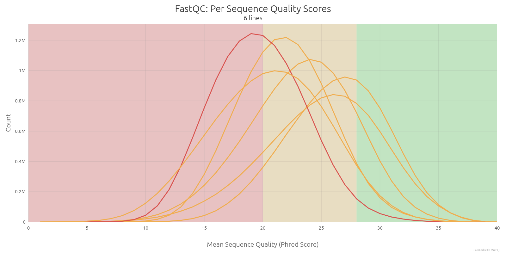
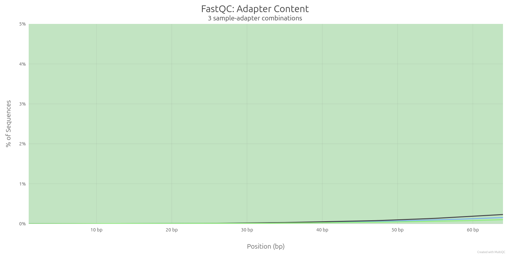
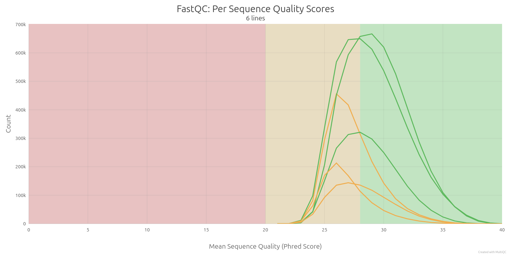
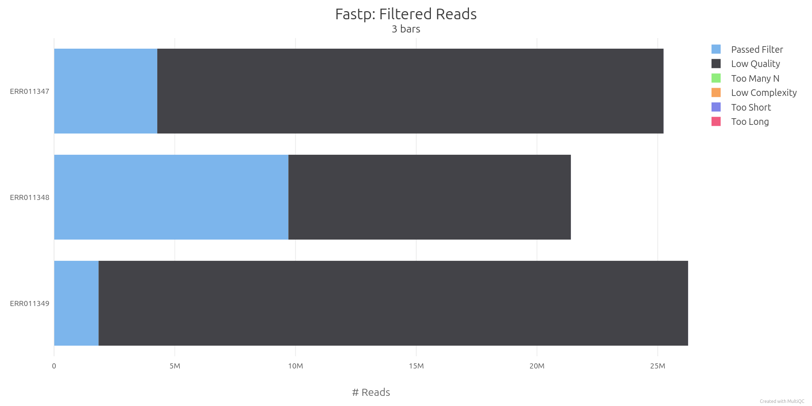
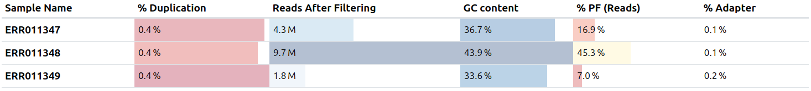
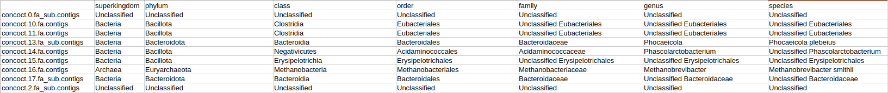
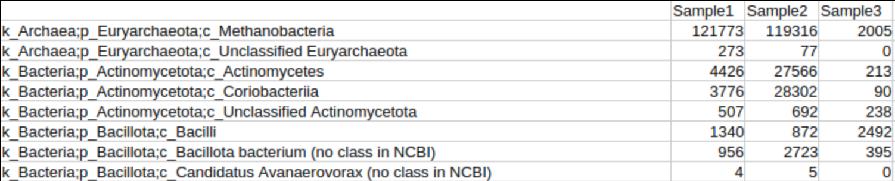
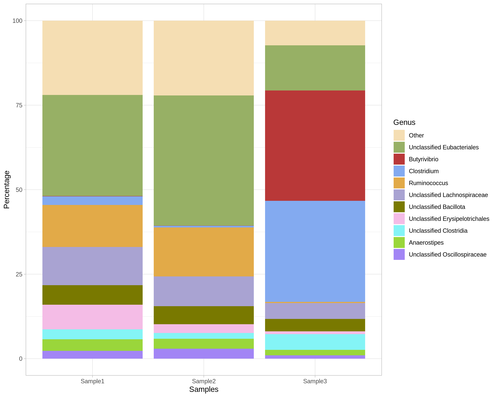
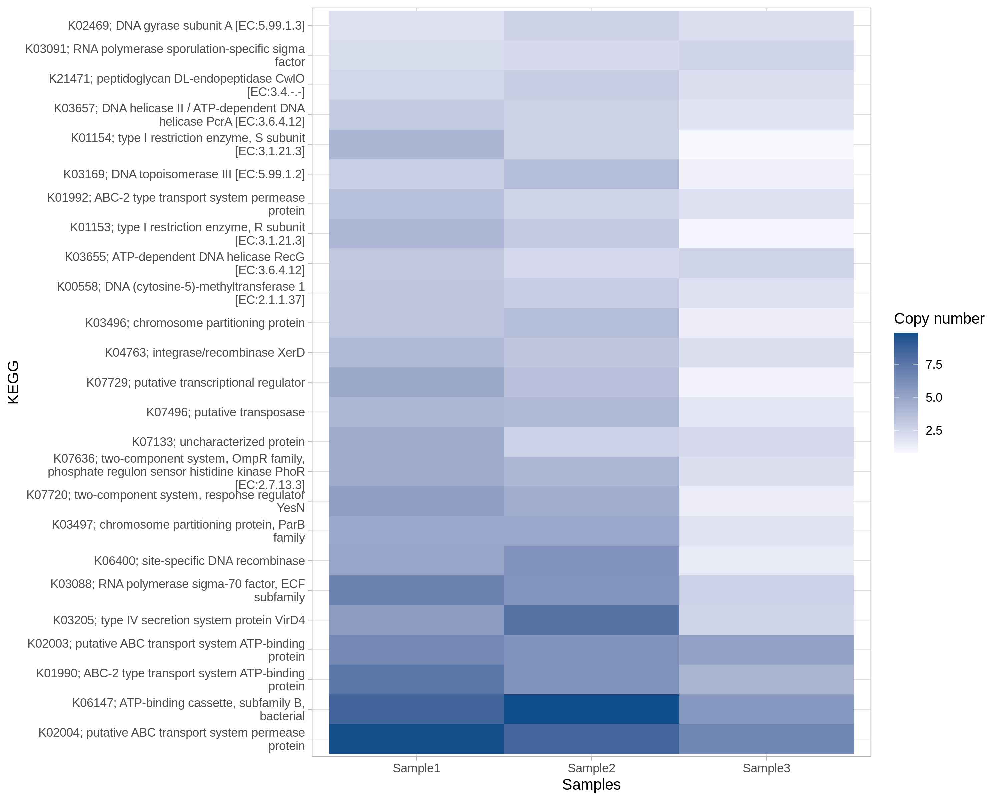

Step 1: Data Quality Control
Raw sequencing data (FASTQ files) is assessed for quality using tools like FastQC and MultiQC. This step detects issues such as adapter contamination, low-quality reads, or GC bias before continuing with further analysis.


Step 2: Trimming
Trimming removes adapter sequences and low-quality bases from reads. Tools like Trimmomatic or fastp ensure that only high-quality sequences are kept, improving mapping efficiency and accuracy.



Step 3: Host removal
Host presence can be detected with software like fastq-screen. Clean trimmed reads are mapped against the host reference genome and only unmapped reads are retained for next steps.
Step 4: Metagenomics analysis with SqueezeMeta
SqueezeMeta is a CSIC-developed sofware which performs a whole metegenomics analysis with a single command. It includes assembly, ORF detection, taxonomic assignment, function detection and Bin (MAG) search. It outputs tables and text files which can be easily visualized with SQMtools or used for personalized/custom post-analyses. Here we show some examples of the generated tables.
➤ Taxonomic assignment and abundance


➤ Contig sequence
➤ PFAM functions abundance
Step 5: Visualization of results with SQMtools
SqueezeMeta developers also provide an R package, SQMtools, which offers functions to visualize data.
Among all functionalities, we can:
➤ Generate plots depicting taxonomy or functions.


➤ Export pathways.
➤ Export taxonomy to Krona, obtaining a multilayer interactive piechart with a hierarchical representation of taxa.
➤ View interactive Krona chart